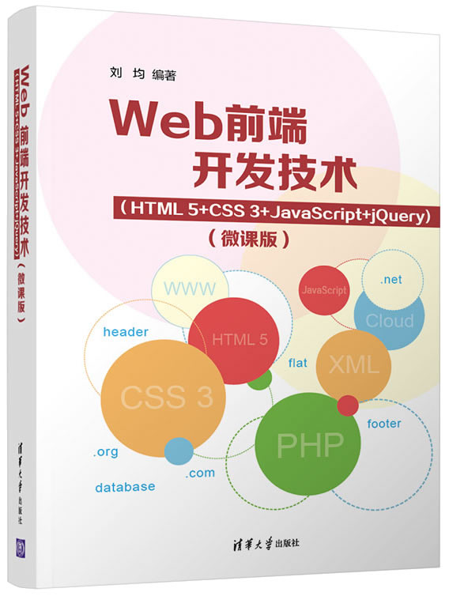

首页 > 书籍下载
《Web前端开发技术（HTML5+CSS3+JavaScript+jQuery)（微课版）》PDF下载（高清完整版）
|  | 作者：刘均 |
| 出版时间：2022年03月01日 | |
| 出版社： 清华大学出版社 | |
| ISBN：9787302601074 | |
| 总页数：367 | |
| 总字数：59.9W |
这是一本讲解全面的 Web 前端开发书籍，本书以“好教、好学、好用”为编写宗旨，系统地介绍了前端开发的核心技术及其应用，适合作为高等院校计算机、软件工程等专业的教材，也可供 Web 开发工作者研究参考。
这里提供的是《Web前端开发技术（HTML5+CSS3+JavaScript+jQuery)（微课版）》的高清 PDF 下载，内容完整，附带目录标签。
这本书组织结构严谨、章节层次清晰、应用实例典型，不仅介绍了 Web 前端开发的基础概念和常用技术，还提供了配套的电子课件和实例源代码，实用性强，让读者更容易理解且高效地学习。
作为一个有经验的 Web 前端开发人员，我不太建议初学者去读这本书，因为书中涉及到的一些新的技术和应用是基于基础知识和技术之上的，所以初学者一定要从 Web 前端开发基础学起哟~
书籍目录
- 第1章Web概述
- 1.1Web的概念
- 1.2Web前端设计基础
- 1.3Web系统开发流程
- 第2章HTML技术基础
- 2.1HTML概念
- 2.2HTML标记的语法
- 2.3HTML文件
- 2.4HTML标记的全局属性
- 第3章HTML文本类标记
- 3.1文本排版标记
- 3.2列表标记
- 第4章HTML多媒体类标记
- 4.1多媒体文件
- 4.2多媒体类标记
- 第5章HTML超链接类标记
- 5.1超链接概念
- 5.2超链接类标记
- 第6章HTML表单类标记
- 6.1表单概述
- 6.2表单基本元素标记
书籍下载
一键登录，免费下载完整版 PDF，文件名称：《Web前端开发技术（HTML5+CSS3+JavaScript+jQuery)（微课版）》.pdf